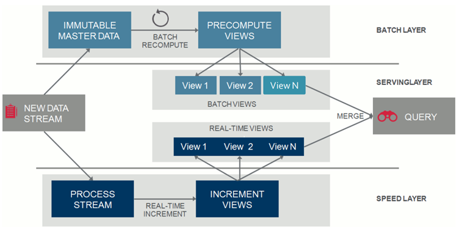
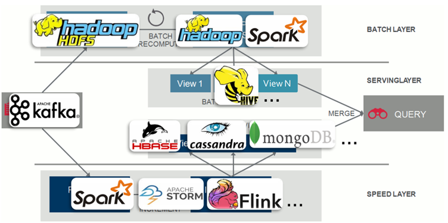

3 Big data architectures
Definition of Big data architecture
A big data architecture is designed to handle the ingestion, processing, and analysis of data that is too large or complex for traditional database systems…
Big data solutions typically involve one or more of the following types of workload:
- Batch processing of big data sources at rest
- Real-time processing of big data in motion
- Interactive exploration of big data
- Predictive analytics and machine learning
Consider big data architectures when you need to:
- Store and process data in volumes too large for a traditional database
- Transform unstructured data for analysis and reporting
- Capture, process, and analyze unbounded streams of data in real time, or with low latency
Lambda architecture
The most frequently used big data architecture is the Lambda Architecture. The lambda architecture was proposed by Nathan Marz in 2011.
Definitions
The past decade has seen a huge amount of innovation in scalable data systems. These include large-scale computation systems like Hadoop and databases such as Cassandra and Riak. These systems can handle very large amounts of data, but with serious trade-offs.Hadoop, for example, can parallelize large-scale batch computations on very large amounts of data, but the computations have high latency. You don’t use Hadoop for anything where you need low-latency results.
NoSQL databases like Cassandra achieve their scalability by offering you a much more limited data model than you’re used to with something like SQL. Squeezing your application into these limited data models can be very complex. And because the databases are mutable, they’re not human-fault tolerant.
These tools on their own are not a panacea. But when intelligently used in conjunction with one another, you can produce scalable systems for arbitrary data problems with human-fault tolerance and a minimum of complexity. This is the Lambda Architecture you’ll learn throughout the book.
Lambda architecture is a way of processing massive quantities of data (i.e. “Big Data”) that provides access to batch-processing and stream-processing methods with a hybrid approach.
Lambda architecture is used to solve the problem of computing arbitrary functions.
Lambda architecture is a data-processing architecture designed to handle massive quantities of data by taking advantage of both batch and stream-processing methods.
This approach to architecture attempts to balance latency, throughput, and fault tolerance by using batch processing to provide comprehensive and accurate views of batch data, while simultaneously using real-time stream processing to provide views of online data. The two view outputs may be joined before presentation.
Lambda architecture depends on a data model with an append-only, immutable data source that serves as a system of record. It is intended for ingesting and processing timestamped events that are appended to existing events rather than overwriting them. State is determined from the natural time-based ordering of the data.
Requirements
Fault-tolerant against both hardware failures and human errors Support variety of use cases that include low latency querying as well as updates Linear scale-out capabilities Extensible, so that the system is manageable and can accommodate newer features easily
Queries
\[ \textbf{query} = \textbf{function}(\textbf{all data}) \]
Some query properties
- Latency: the time it takes to run a query
- Timeliness: how up to date the query results are (freshness and consistency)
- Accuracy: tradeoff between performance and scalability (approximations)
It is based on two data paths:
- Cold path (batch layer)
- It stores all of the incoming data in its raw form and performs batch processing on the data
- The result of this processing is stored as batch views
- Hot path (speed layer)
- It analyzes data in real time
- This path is designed for low latency, at the expense of accuracy
Basic structure

- All data entering the system is dispatched to both the batch layer and the speed layer for processing
- The batch layer has two functions:
- managing the master dataset(an immutable, append-only set of raw data), and
- to pre-compute the batch views
- The serving layer indexes the batch views so that they can be queried in low-latency, ad-hoc way
- The speed layer compensates for the high latency of updates to the serving layer and deals with recent data only
- Any incoming query can be answered by merging results from batch views and real-time views (e.g., the query looks at the serving layer for days until today, and looks at the speed layer for today’s data).
Detailed view

Structure similar to the one described before
- Data stream
- Batch layer
- immutable data
- precompute views
- Real-time layer
- process stream
- increment views
- Serving layer
Possible instances

In general, the technologies used are
- Data stream: Kafka
- Batch layer:
- immutable data: Hadoop HDFS
- precompute views: Hadoop, Spark
- views: Hive (it is a distributed relational database; SQL-like query language can be used)
- Real-time layer:
- process stream and increment views:
- Spark (it has a module available for managing stream data)
- Apache Storm (pros: true real-time; cons: sometimes it approximates)
- Flink (used stream data analysis)
- views: HBase, Cassandra, MongoDB
- process stream and increment views:
- Serving layer
In general: choose the most suitable technology, but also be able to adapt on what’s available.